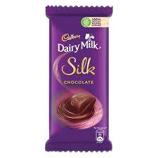
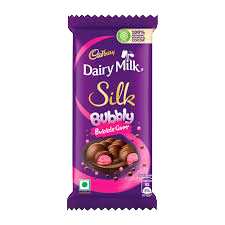
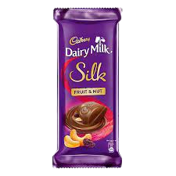

Facts
Dairy milk chocolate was invented by Cadbury in England in 1905 and has since become a popular chocolate brand worldwide.
Dairy milk chocolate contains sugar, cocoa butter, cocoa solids, milk, and emulsifiers, and can be made with varying levels of cocoa solids to achieve different levels of sweetness and chocolate flavor.
Dairy milk chocolate is made with milk solids or powder, which gives it a creamy and smooth texture.
Products
The Dairy Milk Silk range includes various flavors such as plain chocolate, roasted almond, fruit and nut, bubbly, caramel, oreo, and more. The chocolates are made from high-quality cocoa beans and fresh milk, giving them a smooth and silky texture.
  
Nutrition
Dairy Milk Silk is high in fat, carbohydrates, and sugar, while also containing small amounts of protein, fiber, and minerals. It should be consumed in moderation as part of a balanced diet.
One 25-gram serving of Dairy Milk Silk contains approximately 140 calories, 8 grams of fat, 16 grams of carbohydrates, 2 grams of protein, and 0.7 grams of fiber. One 100-gram bar of Dairy Milk Silk contains approximately 560 calories, 31 grams of fat, 60 grams of carbohydrates, 7 grams of protein, and 2.8 grams of fiber.